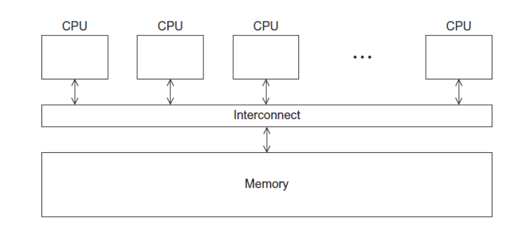

共享内存编程

临界区：对共享内存区域进行更新的代码段
线程：在共享内存编程中，运行在每一个处理器上的一个程序的实例
进程：正在运行（或挂起）的程序的一个实例，除了可执行代码外，它还包括：
- 栈段
- 堆段
- 系统为进程分配的资源描述符
- 安全信息
- 描述进程状态的信息
一般来说，一个进程的内存块是私有的，其他进程无法直接访问，除非操作系统进行干涉。但是有的时候，我们又希望进程之间可以互相访问各自的内存区域，所以我们呢引入轻量级进程的概念——线程。
下面我们使用POSIX线程库，也称为Pthread线程库。它定义了一套多线程编程的应用程序编程接口。它是一个C语言库，也可以应用在C++程序中。
从Hello，world开始
1
2
3
4
5
6
7
8
9
10
11
12
13
14
15
16
17
18
19
20
21
22
23
24
25
26
27
28
29
30
31
32
33
34
| #include <pthread.h>
#include <stdio.h>
#include <stdlib.h>
int thread_count;
void* Hello(void* rank);
int main (int argc, char *argv[])
{
long thread;
pthread_t* thread_handles;
thread_count = strtol(argv[1], NULL, 10);
thread_handles =(pthread_t*) malloc(thread_count * sizeof(pthread_t));
for(thread = 0; thread < thread_count; thread++)
pthread_create(&thread_handles[thread], NULL, Hello, (void*)thread);
printf("Hello from the main thread\n");
for(thread = 0; thread < thread_count; thread++)
pthread_join(thread_handles[thread], NULL);
free(thread_handles);
return 0;
}
void *Hello(void* rank)
{
long my_rank = (long)rank;
printf("Hello from thread %ld of %d\n",my_rank,thread_count);
return NULL;
}
|
编译与运行方法：
1
2
| $ gcc -g -Wall -o pth_hello pth_hello.c -lpthread
$ ./pth_hello 4
|
线程的生成，主要涉及下述几个语句：
1
2
3
4
5
6
7
8
9
10
11
| pthread_t* thread_handles;
thread_count = strtol(argv[1], NULL, 10);
thread_handles =(pthread_t*) malloc(thread_count * sizeof(pthread_t));
for(rank = 0; rank < thread_count; rank++)
pthread_create(&thread_handles[rank], NULL, Hello, (void*)rank);
for(rank = 0; rank < thread_count; rank++)
pthread_join(thread_handles[rank], NULL);
free(thread_handles);
|
互斥
由于是共享内存，当多个线程尝试更新一个共享资源时，结果是无法预测的。
竞争条件：
当多个线程都要访问共享变量或共享文件这样的共享资源时，如果至少其中一个访问的是更新操作，那么这些访问就可能导致某种错误。
临界区：
是一个更新共享资源的代码段，一次只允许一个线程执行该代码段。
忙等待(busy waiting)
1
2
3
4
5
| for(...){
while(flag != my_rank);
...
flag = (flag+1)%thread_count;
}
|
循环等待，只有当flag为线程号的时候，该线程才能够执行
互斥量(Mutex)
初始化一个互斥量：
1
2
3
4
| int pthread_mutex_init(
pthread_mutex_t* mutex_p,
const pthread_mutexattr_t* attr_p
);
|
删除互斥量：
1
| int pthread_mutex_destroy(pthread_mutex_t* mutex_p);
|
p操作：
1
| int pthread_mutex_lock(pthread_mutex_t* mutex_p);
|
v操作：
1
| int pthread_mutex_unlock(pthread_mutex_t* mutex_p);
|
同步
信号量
初始化一个信号量：
1
2
3
4
5
| int sem_init(
sem_t* semaphore,
int shared,
unsigned initial_val
);
|
删除信号量：
1
| int sem_destroy(sem_t* semaphore_p);
|
v操作：
1
| int sem_post(sem_t* semaphore_p);
|
p操作：
1
| int sem_wait(sem_t* semaphore_p);
|
需要加头文件：#include <semaphore.h>
路障（barrier）
条件变量：
是一个数据对象，允许线程在某个特定条件或事件发生前都处于挂起状态。当事件或条件发生时，另一个线程可以通过信号来唤醒挂起的线程。一个条件变量总是与一个互斥量相关联。、
1
2
3
4
| int pthread_cond_signal(pthread_cond_t* cond_var_p);
int pthread_cond_broadcast(pthread_cond_t* cond_var_p);
int pthread_cond_wait(pthread_cond_t* cond_var_p, pthread_mutex_t* mutex_p);
|
条件变量的初始化与销毁：
1
2
3
4
5
6
7
| int pthread_cond_init(
pthread_cond_t cond_p,
const pthread_condattr_t* cond_attr_p
);
int pthread_cond_destroy(
pthread_cond_t* cond_p
);
|
路障的实现：
1
2
3
4
5
6
7
8
9
| pthread_mutex_lock($mutex);
counter++;
if(counter == thread_count){
counter = 0;
pthread_cond_broadcast(&cond_var);
}else{
while(pthread_cond_wait(&cond_var, &mutex)!= 0);
}
pthread_mutex_unlock(&mutex);
|
直接使用barrier
在进行nbody的时候我使用过下面的函数，这个是书本上没有提到的：
1
2
3
4
| pthread_barrier_t barrier;
pthread_barrier_init(&barrier,NULL,thread_count);
pthread_barrier_wait(&barrier);
pthread_barrier_destroy(&barrier);
|
读写锁
对链表，同时读、同时写，可能会出现段错误
两种不太好的解决方案：
- 对整个函数进行互斥量保护
- “细粒度”锁：对每一个结点添加一个互斥量
读写锁：
1
2
3
4
5
6
7
8
9
10
11
12
13
14
15
16
17
18
19
|
int pthread_rwlock_init(
pthread_rwlock_t* rwlock_p,
const pthread_rwlockattr_t attr_p
);
pthread_rwlock_rdlock(&rwlock);
Member(value);
pthread_rwlock_unlock(&rwlock);
pthread_rwlock_wrlock(&rwlock);
Insert(value);
pthread_rwlock_unlock(&rwlock);
pthread_rwlock_wrlock(&rwlock);
Delete(value);
pthread_rwlock_unlock(&rwlock);
int pthread_rwlock_destroy(pthread_rwlock_t* rwlock_p);
|